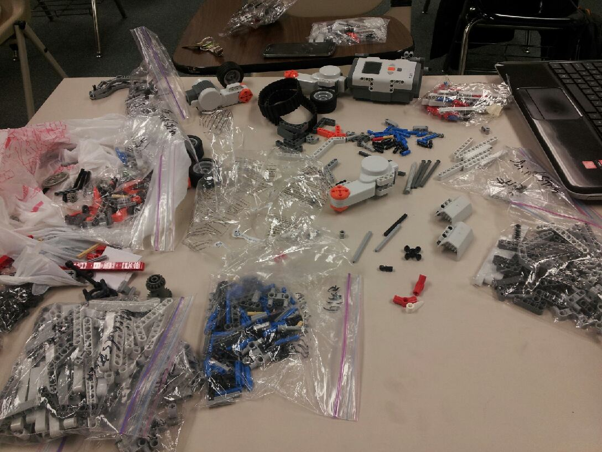
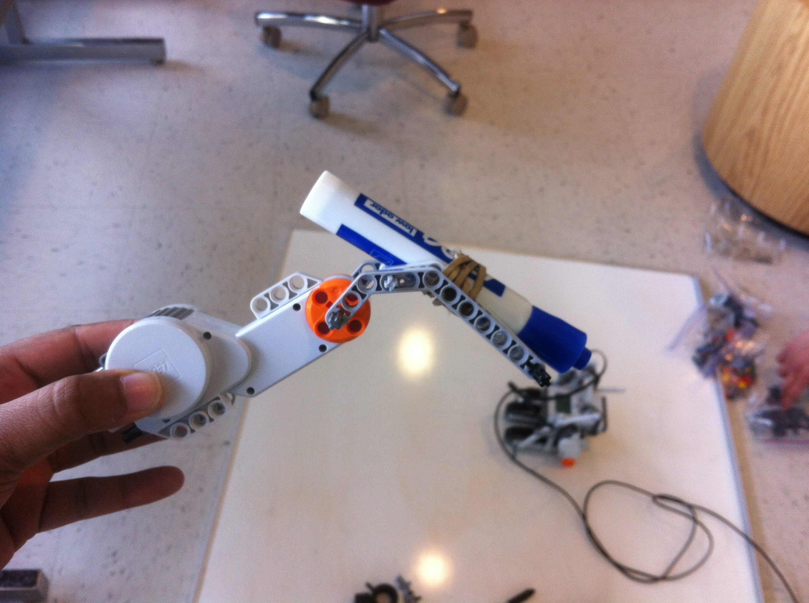
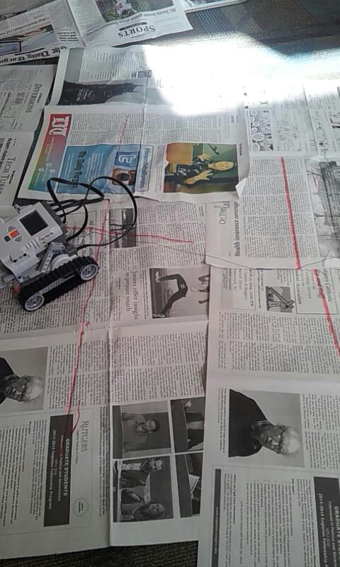

HaikuBot hooked up to the iLab machines.
Lego parts for building robots!
Drawing a zero and one.
A close up of the marker-holding arm.
A test of writing "HELLO" on newspaper.
Haiku Bot is a Lego Mindstorm robot that writes! This is a project for Rutgers' Honors Computer Science Seminar with Professor Matthew Stone.
The idea is simple: create a robot, based off of the Lego Mindstorm brick, that can compose and write haiku poems. For those that don't know, a haiku is a Japanese three-line poem consisting of five, seven and five syllables each.
Haiku Bot's configuration is simple:
The long-term goal was to create a robot skilled enough with a pen to write entire sentences. We had hoped to have precision control over the pen; this would allow us to write small, manageable letters that would allow us to compose entire poems in a reasonable amount of space. At the moment, Haiku Bot's motor skills are rather unwieldy and uncoordinated. It manages to write by simply dragging the pen or marker along with it, moving in patterns that mimic letters and numbers. Because of motor limitations and its wide turning radius, the characters it produces are very large; as a result, it requires at least a square meter of writing space just to produce a few numbers. Currently, Haiku Bot writes binary haiku poetry: combinations of zeros and ones.
All of our code is open-sourced on GitHub.
Our code uses Not eXactly C (NXC), a C-like high-level programming language for programming the Mindstorm brick. Due to its limitations, as well as the limited capabilities of the brick itself, we were somewhat restricted in how much Haiku Bot could accomplish.
We created a few convenience functions for moving the Mindstorm around; they wrap some of the NXC API calls in an easier-to-use interface.
The zero-one "haiku" code is simple: it uses some random-number generation to randomly select either a zero or one as its next number to draw, depending on the syllable count of the line. Each letter begins with some code to raise the pen; for the zero, it simply rotates 360 degrees; for the one, it attempts to move in a straight line. After drawing, Haiku Bot tries to recalibrate its position to move to the right of the previous letter.
What about haiku poetry for humans? We've experimented with that too, but Haiku Bot isn't powerful enough to write them out yet. Our first draft of a haiku generator is a tiny C program: given a pre-composed list of five- and seven-syllable lines, it randomly chooses three lines to make an appropriate poem. Still, those lines were written by a human. For a more random haiku generation, we have a Python script that takes as input a file consisting of words and their syllable content. It makes truly random choices as to which words to string together.
We faced a lot of challenges during this project. Our first challenge was getting a robot that could write precisely. We did not have enough motors and parts to get enough precision so we stuck to simple reliable movements like lines and circles which could be used for writing in binary. Unfortunately, lines and circles are not as reliable as we had hoped. The same code that produced a perfect circle one time, would not repeat the same results the next and we would end up with shapes where the beginning of the circle would not meet with the end or it would draw too long. Overall, we started building hoping to write letters but settled for numbers and even then we could not write 1s and 0s reliably. But we are still happy with our finished product.
Team HaikuBot is Jasmine Feng, Amanda Goonetilleke, and Kyle Suarez.
{kind=link}
{kind=link}
{kind=link}
{kind=link}
{kind=link}
{kind=link}